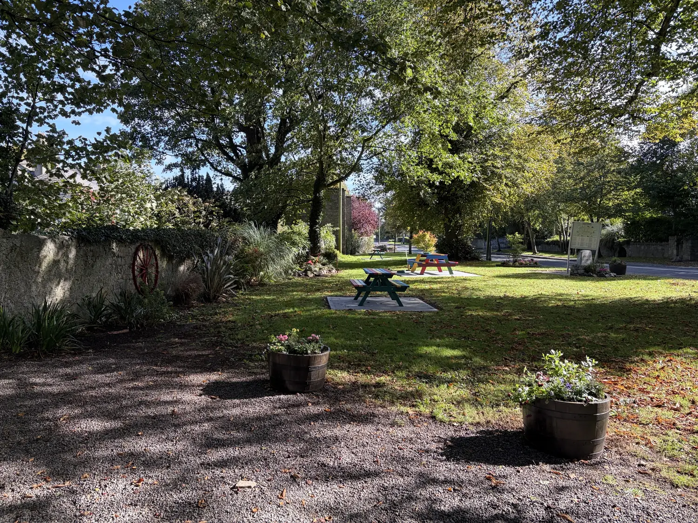
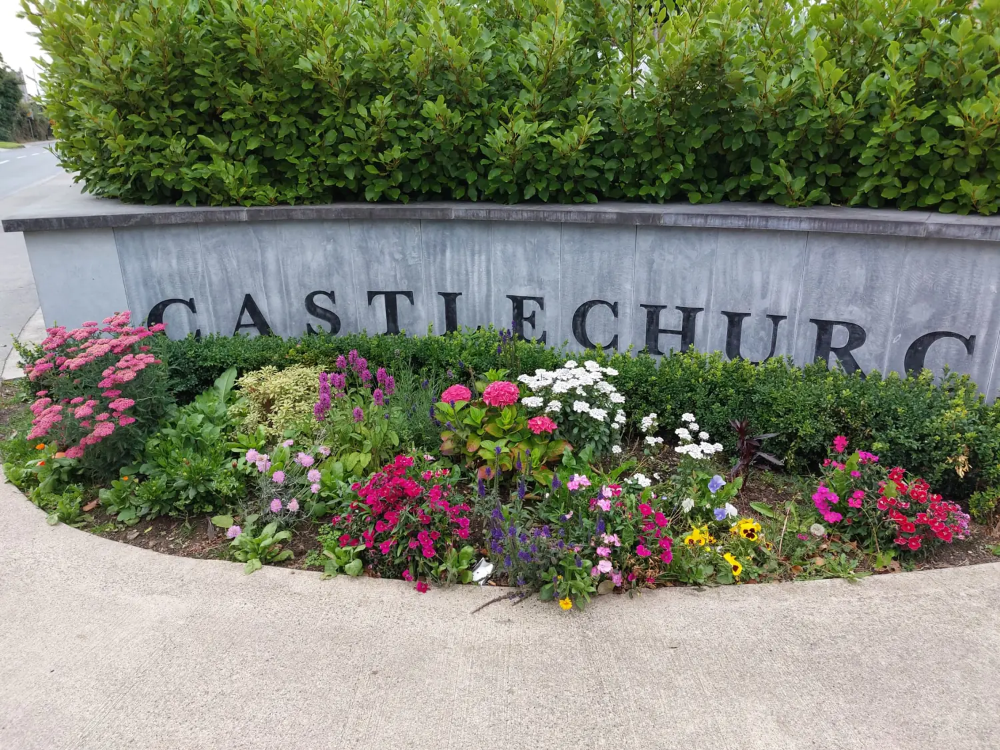
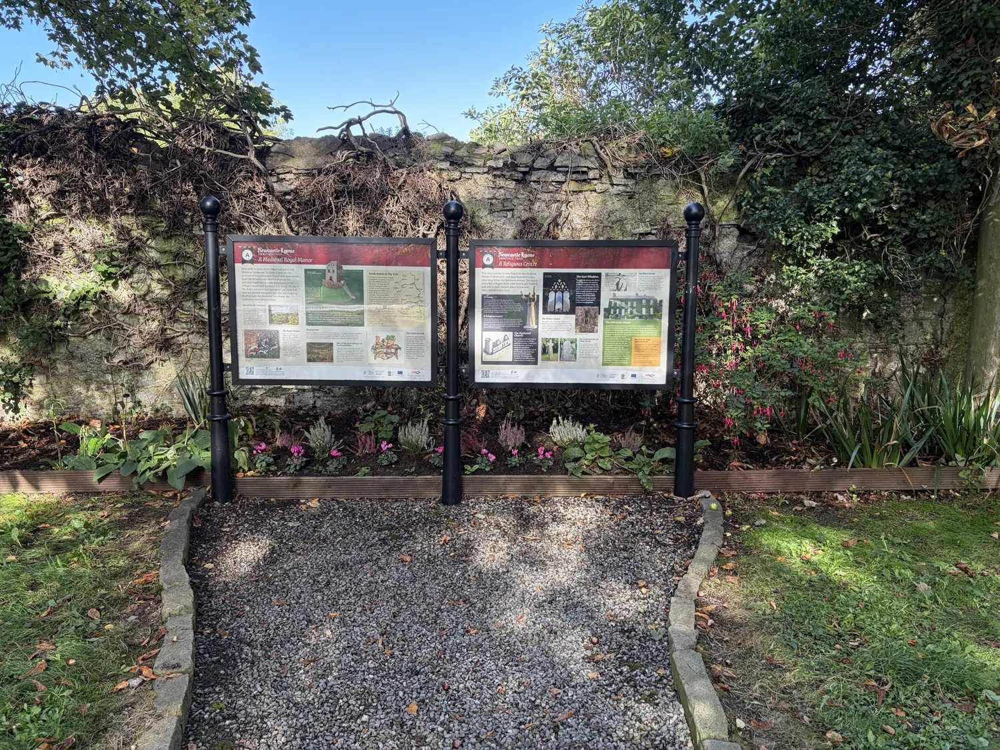

A hill of kings and a saint's monastery
Newcastle's story begins on high ground. The village grew up in the shadow of Liamhain, the hill we now call Lyons Hill, one of the great royal sites of Leinster, where the Kings of Leinster were said to be inaugurated in early medieval times.
The first real settlement here seems to have been a large early-Christian religious enclosure, around 700 metres across, right in what is now the heart of the village. Tradition links it to Saint Finian, remembered as the "Tutor of the Saints of Ireland", who is said to have founded a monastery here in the sixth century. A granite cross and a worn pillar stone still stand in the grounds of the old church, quiet survivors of that very first place of worship.

The Normans and the new castle
When the Normans arrived in the late twelfth century, they made Newcastle a Royal Manor and threw up a motte, a great earthwork castle, beside the church. That "new castle" is exactly where the village gets its name. In Irish it is An Caisleán Nua, "the new castle".
The place was first known as Lymerhin, or Liamhain, and came to be called Newcastle Lyons to tell it apart from the other Newcastles around the country. You will still find it written as Newcastle-juxta-Lyons in old records.
On the edge of the Pale
For centuries Newcastle sat right on the frontier of the Pale, the territory around Dublin held under English control. It was an exposed spot, often raided by the Irish of the Wicklow Mountains, and the village had to be able to defend itself.
By the early fifteenth century it bristled with six fortified tower-houses, and by the sixteenth century it was said to have no fewer than six castles, a sign of just how important the little town had become. One of those towers still stands today, built onto St Finian's Church, where the priest once lived. It is the only one left anywhere in the village in habitable condition.

Two churches for St Finian
St Finian's Church of Ireland grew straight out of that first monastery. Its west tower and chancel date to the fifteenth century, with a fine carved window added in the late 1400s, and more was built on in the late 1700s. The old pre-Reformation church simply carried on in use.
When the penal laws began to ease, from 1778 and then the Catholic Relief Act of 1793, a new Catholic church could at last be built, and it went up in 1813, also dedicated to St Finian. Both churches are listed on the council's Record of Protected Structures today.
A borough, then a quiet village
For nearly two hundred years Newcastle punched well above its weight. From 1613 to 1801 it was a parliamentary borough, returning two members to the Irish House of Commons, a remarkable amount of say for such a small place. The Act of Union in 1800 did away with the borough, and Newcastle settled back into life as a quiet farming village. When Samuel Lewis came to write his Topographical Dictionary of Ireland in 1837, he recorded it as a modest country parish.
A few dates
- 6th centurySt Finian is said to found a monastery on the site.
- 12th centuryThe Normans build a motte and found the Royal Manor. The village takes its name.
- Early 1400sA frontier town of the Pale, with six fortified tower-houses.
- 15th centurySt Finian's Church tower and chancel built; the priest's tower survives.
- 1613–1801A parliamentary borough, returning two MPs to Dublin.
- 1813The new Catholic church is built, also dedicated to St Finian.
- 2001–2022The village grows from about 1,160 people to 4,526.
The village today
For all that it has grown, Newcastle still holds some of the best-preserved traces of a medieval settlement anywhere in Ireland. The old street pattern, the two churches, the surviving tower and the green are all still here to walk around and wonder at.
The modern village has milestones of its own. St Finian's GAA club was founded in 1943 and were Dublin Intermediate champions by 1949. Peamount United, founded in 1983, saw its women's team become the first Irish club to reach the UEFA Women's Champions League. And the village has grown quickly, from around 1,160 people in 2001 to 4,526 by 2022, nearly four times the size in little more than twenty years. New houses, new families, and a medieval heart well worth looking after.
Walk the heritage trail

If you would like to see it for yourself, the Newcastle Lyons Heritage Trail runs through the old village, with boards telling the story of the medieval royal manor and the early religious centre. There is a free audio guide to walk along with, and the village heritage walk is well worth an hour of a dry afternoon.
Sources
Drawn from public local-history sources: Newcastle, County Dublin (Wikipedia), St Finian's Church, Newcastle (Wikipedia), South Dublin County Council – Newcastle Village, and the Newcastle Lyons Heritage Audio Guide (Abarta Heritage).
Looking after a village with history
We keep the beds, the green and the old corners of Newcastle looking their best. If you can spare an hour or two, you would be very welcome.
Get involved